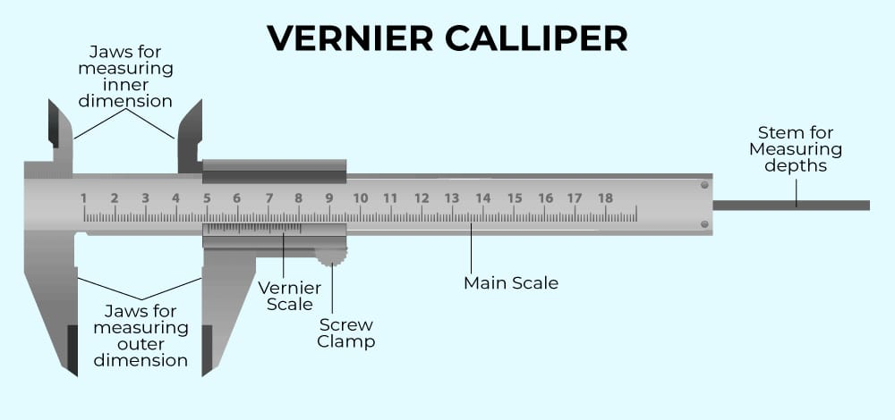
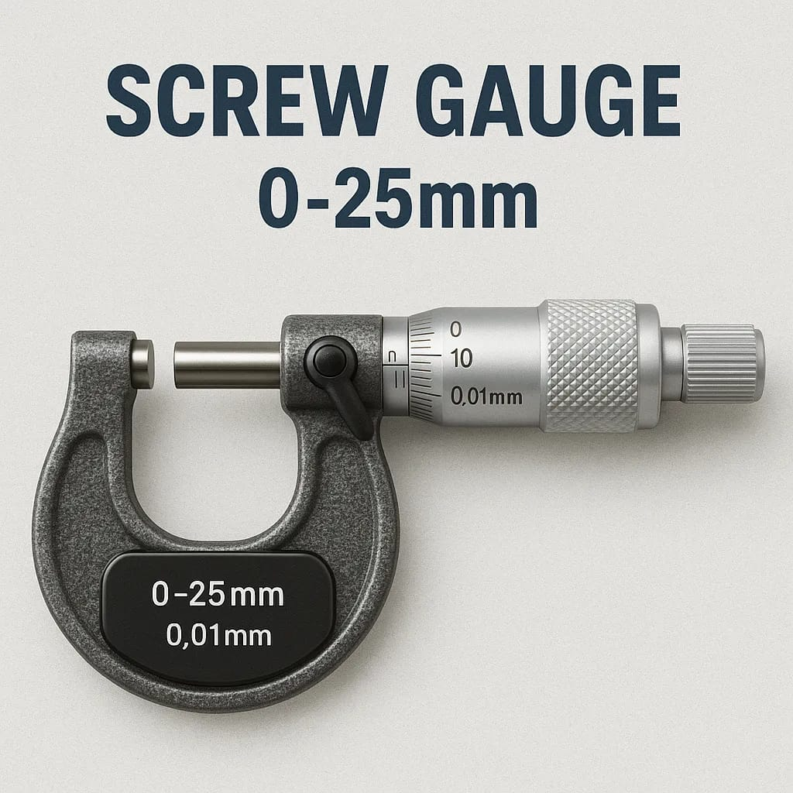
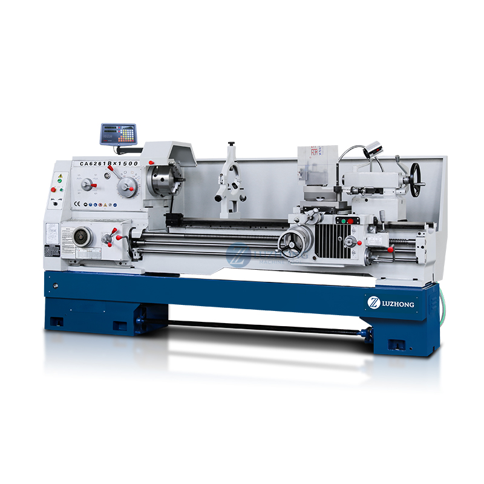

පියවරෙන් පියවර ඉගෙන ගනිමු · 05 වන පාඩම
මූලික නිෂ්පාදන තාක්ෂණය හා එකලස් කිරීමේ ශිල්පක්රම
මෙම පාඩමෙන් මිනුම් උපකරණ කියවීම, කැපුම් යන්ත්රවල ක්රියාකාරිත්වය, ස්ථිර හා තාවකාලික බද්ධ තෝරාගැනීම සහ වැඩමුළු ආරක්ෂාව තනිවම අධ්යයනය කරනු ඇත. සෑම කොටසකම උදාහරණයක් සහ අන්තර්ක්රියාකාරී අභ්යාසයක් ඇත.
📏 මිනුම් හා සලකුණු🔩 පට්ටල් හා විදුම්🧰 බද්ධ කිරීම🦺 ආරක්ෂිත වැඩ
01පියවර 1 · මිනුම් ගැනීම හා සලකුණු කිරීම
මිනුම් උපකරණ සහ සලකුණු
නිවැරදි මිනුමක් හා සලකුණක් තැබීම, නිසි ලෙස සකස් කළ එකිනෙකට ගැළපෙන කොටස් නිපදවීමේ පළමු පියවරයි.
වර්නියර් කැලිපරය
ප්රධාන පරිමාණය, ගමන් කරන වර්නියර් පරිමාණය, පිටත හා ඇතුළත මිනුම් හනු, ගැඹුර මනින දණ්ඩ සහ අගුළු ඉස්කුරුප්පුව මෙහි කොටස් වේ. පිටත විෂ්කම්භය, ඇතුළත විෂ්කම්භය, ඝනකම සහ සිදුරක ගැඹුර මැනීමට භාවිත කරයි.
කියවීමේ අනුපිළිවෙළ: පළමුව වර්නියර් පරිමාණයේ ශුන්යයට වම් පසින් ඇති ප්රධාන පරිමාණයේ අවසන් අගය සටහන් කරන්න. ඉන්පසු ප්රධාන පරිමාණයේ ඉරක් සමඟ හරියටම සමපාත වන වර්නියර් කොටසේ අංකය සොයන්න. එම අංකය කුඩාම මිනුමෙන් ගුණ කර ප්රධාන කියවීමට එකතු කරන්න.
කුඩාම මිනුම = ප්රධාන පරිමාණයේ එක් කොටසක අගය − වර්නියර් පරිමාණයේ එක් කොටසක අගයමිනුම = ප්රධාන පරිමාණ කියවීම + (සමපාත වර්නියර් කොටස් ගණන × කුඩාම මිනුම)
ප්රායෝගික උදාහරණය: දණ්ඩක විෂ්කම්භය මැන එය දරණයකට ගැළපේදැයි පරීක්ෂා කිරීමට පිටත හනු භාවිත කරන්න. වයරයක පිටත ප්රමාණය හෝ සිදුරක ගැඹුර ද අනෙක් මිනුම් කොටස්වලින් පරීක්ෂා කළ හැක.
විභාග සටහන: මිනුමට අදාළ ඒකකය පළමුව සටහන් කරන්න. උපකරණයට ශුන්ය දෝෂයක් ඇත්නම් එය නිවැරදි කළ යුතුය; මෙම සරල අභ්යාසයේදී ශුන්ය දෝෂය 0 ලෙස ගනී.
සටහන: කලින් තිබූ වර්නියර් කැලිපරයේ සිමියුලේෂනයේ සැලසුම නිවැරදි නොවන බැවින් එය ඉවත් කර ඇත. පහත දැක්වෙන්නේ ඔබ ලබාදුන් යොමු ඡායාරූපයයි.

වර්නියර් කැලිපරය · යොමු ඡායාරූපය
මයික්රෝමීටර ඉස්කුරුප්පු මිනුම
රාමුව, ස්ථාවර මුහුණත, චලනය වන දණ්ඩ, අගුල, ප්රධාන පරිමාණය, වෘත්තාකාර පරිමාණය සහ පීඩනය සීමා කරන රැචට්ටුව යන කොටස් ඇත. තුනී ද්රව්යයක ඝනකම හෝ කුඩා දණ්ඩක විෂ්කම්භය ඉතා නිවැරදිව මැනීමට යොදා ගනී.
පියවර: මිනුම් වස්තුව ස්ථාවර මුහුණත සහ චලන දණ්ඩ අතර තබා රැචට්ටුව මෘදුව කරකවන්න. ප්රධාන පරිමාණයේ සම්පූර්ණ හා අර්ධ මිලිමීටර් කියවීමට, වෘත්තාකාර පරිමාණයේ සමපාත කොටස කුඩාම මිනුමෙන් ගුණ කර එකතු කරන්න.
ඉස්කුරුප්පු පියවර = එක් සම්පූර්ණ වටයකදී දණ්ඩ ගමන් කරන දුර
කුඩාම මිනුම = ඉස්කුරුප්පු පියවර ÷ වෘත්තාකාර පරිමාණයේ කොටස් ගණනකියවීම = ප්රධාන පරිමාණ කියවීම + (සමපාත වෘත්තාකාර කොටස × කුඩාම මිනුම)
උදාහරණය: තුනී තහඩුවක ඝනකම හෝ කුඩා වයරයක විෂ්කම්භය මැනීමට සුදුසුය. රැචට්ටුව අධික බලයෙන් තද කිරීමෙන් මිනුම වෙනස් වීම වළක්වයි.
සටහන: කලින් තිබූ මයික්රෝමීටර සිමියුලේෂනය වෙනුවට ඔබ ලබාදුන් යොමු ඡායාරූපය මෙහි දක්වා ඇත.

මයික්රෝමීටර ඉස්කුරුප්පු මිනුම · යොමු ඡායාරූපය
වෙනත් සලකුණු කිරීමේ හා පරීක්ෂා කිරීමේ උපකරණ
- ඩයල් මිනුම් දර්ශකය: යොමු පෘෂ්ඨයකට සාපේක්ෂ කුඩා චලනයක් හෝ අසමතාවක් පෙන්වයි. උදාහරණය: පට්ටලයේ රඳවනයට සවි කළ දණ්ඩක් කේන්ද්රගතදැයි පරීක්ෂා කිරීම.
- මතුපිට තහඩුව: පැතලි යොමු පෘෂ්ඨයකි. උස මිනුම් උපකරණයක් හෝ සලකුණු කටුවක් යොදා වැඩ කොටසෙහි රේඛා අඳියි. එය කැපීමේ හෝ තැලීමේ මේසයක් ලෙස භාවිත නොකරන්න.
- කෝණමානය: පෘෂ්ඨ දෙකක් අතර කෝණය මැන සකස් කරයි. උදාහරණය: ඇලවූ දාරයක කෝණය පරීක්ෂා කිරීම.
- උස මිනුම් උපකරණය සහ බෙදුම් කටුව: යොමු පෘෂ්ඨයකින් උස සලකුණු කිරීමට, වෘත්ත/චාප ඇඳීමට සහ මධ්යය සොයාගැනීමට යොදා ගනී.
සලකුණු කිරීම අවශ්ය ඇයි? කැපීමට පෙර මධ්යය, සීමාව සහ සිදුරු පිහිටීම නිවැරදිව ලකුණු කිරීමෙන් වැරදි ස්ථානයක සෑදූ කොටස් හා ද්රව්ය නාස්තිය අඩු කළ හැක.
02පියවර 2 · යන්ත්රයෙන් හැඩගැන්වීම
පට්ටලය, විදුම් යන්ත්රය හා කැපුම් ක්රියා
පට්ටලයේ වැඩ කොටස භ්රමණය වන අතර සවි කළ කැපුම් ආයුධය ද්රව්ය ඉවත් කර හැඩය සකස් කරයි.
අන්තර්ක්රියාකාරී අභ්යාසය 2 · පට්ටල් යන්ත්රය
චක්කය ක්රියාත්මක කර, සිමියුලේටරයේ මෙවලම් තුඩ මූසිකයෙන් හෝ ස්පර්ශ තිරයෙන් ඇදගෙන X (ඇතුළට/පිටතට) සහ Z (දිගට) දිශාවලින් ගෙන යන්න. දිශා බොත්තමක් ඔබාගෙන සිටින විට මෙවලම සෙමින් ගමන් කරයි; අතහැරිය විට නවතී. බොත්තමක් දෙවරක් ක්ලික් කළ විට ස්වයං පෝෂණය ඇරඹේ; එය හෝ වෙනත් තැනක් ක්ලික් කළ විට නවතී. කැරේජ් සහ හරස් ලිස්සුමේ පාලකද භාවිත කළ හැක. භ්රමණය වන වැඩකොටසට මෙවලම ඇතුළු වන සෑම ගමන් මාර්ගයකදීම එම ස්ථානයේ ද්රව්ය ඉවත් වී හැඩය වෙනස් වේ. මෙය ඉගෙනුම් ආකෘතියකි; සැබෑ යන්ත්ර භාවිතයට ආරක්ෂක ආවරණ සහ නිසි පුහුණුව අත්යවශ්යය.
මෙවලම ඇදගෙන ගිය ගමන් මාර්ගය අනුව වැඩකොටසේ පැතිකඩ සජීවීව කැපේ. කැපීම සඳහා පළමුව චක්කය ආරම්භ කරන්න.

කාර්මික ලෝහ කැපුම් පට්ටලයක උදාහරණය · ඉහළ සිමියුලේටරයේ කොටස් හඳුනාගන්න
ලෝහ කැපීමේ පට්ටලය
ලෝහ කැපීමේ පට්ටලයක වැඩ කොටස රඳවනයට සවි කර භ්රමණය කරයි. කැපුම් ආයුධය පාලිත ලෙස ගෙන යන විට අතිරික්ත ද්රව්ය ඉවත් වී අවශ්ය හැඩය හා මතුපිට නිමාව ලැබේ.
ප්රධාන කොටස් සහ කාර්ය
- ඇඳ: යන්ත්රයේ බර දරා ප්රධාන කොටස් සවි කරන දෘඪ පාදමයි; එහි මඟපෙන්වන පථ මත කරත්තය හා පසුපස කුට්ටිය ගමන් කරයි.
- ප්රධාන කුට්ටිය: ප්රධාන දණ්ඩ, වේග වෙනස් කරන කොටස හා චක්කය දරයි. චක්කය වැඩ කොටස තදින් අල්ලා භ්රමණය කරයි.
- පසුපස කුට්ටිය: ඇඳ මත ස්ථානගත කර දිගු වැඩ කොටසට මධ්යයෙන් ආධාර දෙයි; විදුම් කටුවක් වැනි උපකරණයක් ද රඳවයි.
- කරත්තය: කැපුම් ආයුධය වැඩ කොටස දිගේ අවශ්ය දිශාවට ගෙන යයි.
- හරස් කදාව: කරත්තය මත සවිවී ආයුධය වැඩ කොටසේ අක්ෂයට හරස්ව ගෙන යයි; මුහුණත් කිරීමේදී එය භාවිත වේ.
- මෙවලම් කණුව: කැපුම් ආයුධය නිවැරදි උසින් තදින් රඳවයි.
- ඊයම් ඉස්කුරුප්පුව: නූල් කැපීමේදී කරත්තයේ චලනය ප්රධාන දණ්ඩේ භ්රමණයට ගැළපෙන පරිදි ගෙන යයි.
යන්ත්රන ක්රියාවලි
- මුහුණත් කිරීම: ආයුධය වැඩ කොටසේ කෙළවර හරහා මධ්යය දෙසට ගෙන ගොස් අග මුහුණත සමතලා කරයි; කෙළවරේ දිග/පැතලි බව සකස් කිරීමට යොදා ගනී.
- සෘජු සිලින්ඩරාකාර හැරවීම: ආයුධය අක්ෂය දිගේ ගෙන ගොස් විෂ්කම්භය අඩු කරයි; දණ්ඩක් හෝ පතුවළක් සෑදීමට උදාහරණයකි.
- කේතුක හැරවීම: ආයුධය අක්ෂයට කෝණයකින් ගෙන ගොස් කේතුක මතුපිටක් සාදයි; කේතුක ආසනයක් සෑදීමට යොදා ගනී.
- නර්ලින් කිරීම: රටා ඇති රෝලරයක් මතුපිටට තද කර දියමන්ති හැඩැති අල්ලාගැනීමේ රටාවක් සාදයි; සාමාන්යයෙන් කැපීමකට වඩා මතුපිටට රටාව තද කිරීමකි.
- නූල් කැපීම: නූල් කැපුම් ආයුධය හා වැඩ කොටසේ භ්රමණය සම්බන්ධිත පෝෂණයකින් ගෙන ගොස් බාහිර නූලක් සාදයි.
| ක්රියාව | චලනය හා අරමුණ | ප්රායෝගික උදාහරණය |
|---|
| මුහුණත් කිරීම | ආයුධය මධ්යය දෙසට හරස්ව ගෙන ගොස් අග මුහුණත සමතලා කරයි. | දණ්ඩක කෙළවර අක්ෂයට ලම්බව තට්ටු කිරීම. |
| සෘජු සිලින්ඩරාකාර හැරවීම | ආයුධය අක්ෂය දිගේ ගෙන ගොස් විෂ්කම්භය අඩු කරයි. | දණ්ඩක් හෝ පතුවළක් සෑදීම. |
| කේතුක හැරවීම | ආයුධය අක්ෂයට කෝණයකින් ගෙන ගොස් කේතුක මතුපිටක් සාදයි. | කේතුක ආසනයක් සෑදීම. |
| නූල් කැපීම | භ්රමණයට ගැළපෙන පෝෂණයකින් නූලක් සාදයි. | බෝල්ට් හෝ ප්රධාන දණ්ඩක නූල් කැපීම. |
| නර්ලින් කිරීම | දෘඪ රෝලරයක් මතුපිටට තද කර අල්ලාගැනීමට රටාවක් සාදයි; සාමාන්යයෙන් ද්රව්ය කපා ඉවත් නොකරයි. | අල්ලුවක හෝ සකස්කිරීමේ බොත්තමක රළු මතුපිටක් සෑදීම. |
කැපුම් වේගය: V = (π × D × N) ÷ 1000 මී./මිනි.D — වැඩ කොටසේ විෂ්කම්භය (මි.මී.), N — භ්රමණ වේගය (වට/මිනි.), π ≈ 3.1416
පෝෂණය: එක් වටයකදී ආයුධය ඉදිරියට යන දුර (මි.මී./වට). කැපුම් ගැඹුර: අරීයව ඉවත් කරන ද්රව්යයේ ගැඹුරයි. බාහිර හැරවීමේදී මුල් විෂ්කම්භය D1 සහ අවසාන විෂ්කම්භය D2 නම්, අරීය ගැඹුර = (D1 − D2)/2. සුදුසු අගයන් ආයුධය, ද්රව්යය සහ සවි කිරීම අනුව වෙනස් වේ.
විදුම් යන්ත්රය
විදුම් කටුව භ්රමණය වෙමින් අක්ෂීය දිශාවට පෝෂණය ලබාගෙන සිදුරක් සාදයි. වැඩ කොටස තදින් සවි කරන්න. කටුව රඳවනයේ යතුර එහි තබා නොයන්න.
- ඇඹරුම් කට්ට සහිත විදුම් කටුව: සාමාන්ය සිලින්ඩරාකාර සිදුරු සඳහාය. මධ්ය සිදුරු කටුවකින් ලකුණු කිරීමෙන් කටුව ලිස්සා යාම අඩු වේ.
- කේතුක කට කැපුම් කටුව: සිදුරේ කට කේතුක කර, ඉස්කුරුප්පු හිස මතුපිටට සමව පිහිටීමට යොදා ගනී.
- සිලින්ඩරාකාර කට කැපුම් කටුව: සිදුරේ කට වටා ගැඹුරු කොටසක් සාදා බෝල්ට් හිස ඇතුළට පිහිටුවයි.
- සිදුරු නිමැවුම් කටුව: කලින් විදින ලද සිදුර අවසාන ප්රමාණයට හා සුමටතාවයට ගෙන එයි.
- අභ්යන්තර නූල් කැපීමේ කටුව: සිදුර ඇතුළත නූල් කපයි. පළමුව සුදුසු විෂ්කම්භයක සිදුරක් විද, සුළු පියවරවලින් කරකවන්න.
ආරක්ෂාව: භ්රමණය වන විදුම් යන්ත්රයට අත්වැසුම්, ලිහිල් ඇඳුම් හෝ හිසකෙස් ළං නොකරන්න. ලෝහ කැබලි අතින් නොව බුරුසුවකින් ඉවත් කරන්න.
03පියවර 3 · බද්ධ කිරීම හා එකලස් කිරීම
අවශ්යතාව අනුව බද්ධ ක්රමය තෝරමු
ශක්තිය, තාපය, කම්පනය, නඩත්තුව හා වෙන්කිරීමේ අවශ්යතාව එකට සලකා බලන්න.
ස්ථිර බද්ධ
වෙල්ඩින් කිරීම
සම්බන්ධ වන ස්ථානයේ මූලික ලෝහය උණු කර, අවශ්ය විට පිරවුම් ලෝහය එක් කර ශක්තිමත් සන්ධියක් සාදයි. චාප වෙල්ඩින් කිරීමේදී ඉලෙක්ට්රෝඩය හා වැඩ කොටස අතර විදුලි චාපයක් ඇති වේ. ආවරණ සහිත ඉලෙක්ට්රෝඩය දියවීමේදී ආරක්ෂක වායු හා ස්ලැග් (ආවරණ තට්ටුවක්) සෑදී උණු ලෝහය වාතයෙන් වෙන් කරයි; සිසිල් වූ පසු ස්ලැග් ඉවත් කරයි. සමහර වෙල්ඩින් ක්රමවල ආරක්ෂක වායුවක් සපයන නමුත් ආවරණ සහිත ඉලෙක්ට්රෝඩය යොදන සෑම චාප වෙල්ඩින් ක්රමයකටම බාහිර වායුවක් අවශ්ය නොවේ.
ඔක්සි-ඇසිටිලීන් වෙල්ඩින් දැල්ල: උදාසීන දැල්ල සාමාන්ය වානේ වැඩ සඳහා; ඔක්සිකාරක දැල්ල අතිරික්ත ඔක්සිජන් සහිතය; කාබන් එකතු කරන/අඩුකාරක දැල්ල අතිරික්ත ඇසිටිලීන් සහිතය. භාවිතයට ගැළපෙන දැල්ල තෝරන්න.
බ්රේසිං හා සොල්ඩරින්
සාමාන්ය වර්ගීකරණයට අනුව බ්රේසිංහිදී මූලික ලෝහය උණු නොකර, 450°C ඉක්මවන ද්රවාංකයක් ඇති පිරවුම් ලෝහයකින් සම්බන්ධ කරයි. සොල්ඩරින්හිදී 450°C ට අඩු ද්රවාංකයක් ඇති පිරවුම් ලෝහයක් යොදා ගනී. බ්රේසිං පිරවුම් ලෝහය ඇතැම්විට ස්පෙල්ටර් ලෙස හැඳින්වේ. විදුලි හා ඉලෙක්ට්රොනික පරිපථවලට සුදුසු ද්රව්ය හා ෆ්ලක්ස් තෝරන්න; වර්තමානයේ ඊයම් රහිත පිරවුම් ලෝහ වඩාත් සුදුසුය.
රිවට් කිරීම
හිසක් ඇති රිවට් එක සිදුරකින් දමා අනෙක් කෙළවර හැඩගැන්වීමෙන් ස්ථිර සන්ධියක් සාදයි. ඝන රිවට් සවි කිරීමට දෙපසටම ළඟාවිය යුතුය; අන්ධ රිවට් එකක් එක් පැත්තකින් සවි කළ හැක. උදාහරණය: ගුවන් යානයක සිහින් ඇලුමිනියම් ආවරණ තහඩු රිවට් කර සවි කිරීමෙන් වෙල්ඩින් තාපය නිසා ඇති විය හැකි විකෘතිය අඩු කළ හැක. සැබෑ ගුවන් යානා නිෂ්පාදනයේදී අනුමත සැලසුම හා නියමිත ක්රමය අනිවාර්යයෙන් අනුගමනය කළ යුතුය.
වෙන් කළ හැකි බද්ධ
- බෝල්ට් හා නට්: වැඩි බරක් දරන, නඩත්තුවේදී ගලවාගැනීමට අවශ්ය කොටස් සම්බන්ධ කරයි; උදාහරණය: යන්ත්රයක රාමුව හා ආවරණය.
- ඉස්කුරුප්පු: නූල් කැපූ සිදුරකට හෝ ද්රව්යයටම සවි කර කොටස් තද කරයි; උදාහරණය: විදුලි උපකරණයක පිටත ආවරණය.
- යතුර: පතුවළ හා කේන්ද්රකය අතර භ්රමණ බලය සම්ප්රේෂණය කර සාපේක්ෂව ලිස්සා හැරීම වළක්වයි; උදාහරණය: පතුවළට සවි කළ පුලිය හෝ දැති රෝදය.
- පින් කටුව: කොටස් නිවැරදි ස්ථානයේ තැබීමට, මඟ පෙන්වීමට හෝ සුළු බලයක් සම්ප්රේෂණය කිරීමට යොදා ගනී; සේවා කටයුතුවලදී ඉවත් කළ හැක.
| බද්ධ වර්ගය | තෝරාගත යුතු අවස්ථාව | උදාහරණය |
|---|
| ස්ථිර | නිතර වෙන් කිරීමේ අවශ්යතාවක් නැති විට. | ව්යුහාත්මක වෙල්ඩින් සන්ධිය, රිවට් කළ ආවරණය |
| තාවකාලික | පරීක්ෂාව, අලුත්වැඩියාව හෝ සකස් කිරීම සඳහා වෙන් කළ යුතු විට. | බෝල්ට් හා නට් යෙදූ ආවරණය, යතුරකින් සවි කළ පුලිය |
විභාගයේදී වෙන්කර හඳුනාගන්න: සොල්ඩරින් හා බ්රේසිං කිරීමේදී මූලික ලෝහය උණු නොවේ; වෙල්ඩින් කිරීමේදී සන්ධි ප්රදේශයේ මූලික ලෝහය උණු වේ. රිවට් හා බෝල්ට් දෙකටම සිදුරු අවශ්ය විය හැකි නමුත් රිවට් ඉවත් කිරීමේදී එය බොහෝවිට විනාශ වේ; බෝල්ට් නැවත භාවිත කළ හැක.
අන්තර්ක්රියාකාරී අභ්යාසය 3 · බද්ධ ක්රමය තෝරාගැනීම
ද්රව්යයට ගැළපෙන අවස්ථාවක් තෝරන්න. නිර්දේශිත උපකරණය ඉස්මතු වී සන්ධිය සෑදෙන ආකාරය පෙන්වයි.
04පියවර 4 · කර්මාන්තශාලා ආරක්ෂාව
වැඩබිම ආරක්ෂිත කරගනිමු
ආරක්ෂාව යනු කාර්යය අවසන් වූ පසු සලකා බලන දෙයක් නොව, වැඩ සැලැස්මේම කොටසකි.
පුද්ගලික ආරක්ෂක උපකරණ
- ආරක්ෂක ඇස් කණ්ණාඩි: ලෝහ කැබලි, ගිනි පුපුරු හා දූවිලිවලින් ඇස් ආරක්ෂා කරයි; මුහුණට ගැළපෙන, නොකැඩුණු එකක් භාවිත කරන්න.
- අත්වැසුම්: භ්රමණය වන යන්ත්ර නොමැති, කැපුම් අවදානමට ගැළපෙන කාර්යවලදී පමණක්. පට්ටලය හෝ විදුම් යන්ත්රය ක්රියාත්මක වන විට අත්වැසුම් භාවිත නොකරන්න.
- හිස් ආවරණය: ඉහළින් වස්තු වැටීමේ හෝ හිස ගැටීමේ අවදානම ඇති තැන්වල.
- ආරක්ෂක ඇඳුම හා ඒප්රනය: ගිනි පුපුරු සහ උණුසුම් කැබලිවලින් ආරක්ෂා වීමට; ලිහිල් කොටස් නොතිබිය යුතුය.
- කන් ආවරණ, ආරක්ෂක පාවහන් හා මුහුණු ආවරණ: අවදානම අනුව යොදාගන්න.
වැඩට පෙර · වැඩ අතරතුර · වැඩෙන් පසු
- අදාළ යන්ත්රය භාවිත කිරීමට උපදෙස් ලබාගන්න; හානි, ආරක්ෂක ආවරණ, විදුලි ස්විචය හා වැඩ කොටස සවි කර ඇති ආකාරය පරීක්ෂා කරන්න.
- ඇස් කණ්ණාඩි පළඳින්න, දිගු හිසකෙස් බැඳගන්න, ආභරණ හා ලිහිල් ඇඳුම් ඉවත් කරන්න. වැඩබිම පිරිසිදුව තබන්න.
- භ්රමණය වන වැඩ කොටසට හෝ රඳවනයට අත නොතබන්න. මැනීමට, සැකසීමට හෝ කැබලි ඉවත් කිරීමට පෙර යන්ත්රය නවතා බල සැපයුම විසන්ධි කරන්න.
- ගිනි අවදානම් කාර්යවලදී දහනය වන ද්රව්ය ඉවත් කර, සුදුසු ගිනි නිවනය හා වාතාශ්රය සූදානම් කරන්න.
- වැඩ අවසන් වූ පසු යන්ත්රය නවතා, ආයුධ නිසි තැන තබා, කැබලි බුරුසුවකින් හෝ කොක්කකින් ඉවත් කරන්න.
නවතා උපකාර ඉල්ලන්න: ආරක්ෂක ආවරණය නොමැති නම්, ආයුධය හානි වී ඇත්නම්, වැඩ කොටස ලිහිල්ව සවි වී ඇත්නම් හෝ උපදෙස් නොතේරේ නම් යන්ත්රය ක්රියාත්මක නොකරන්න. අනතුරක් සිදුවුවහොත් වහා නවතා වගකිවයුතු අයට දන්වන්න.
05පියවර 5 · සූත්ර ගණනය හා ස්වයං ඇගයීම
කැපුම් වේගය ගණනය කර දැනුම පරීක්ෂා කරන්න
සෙවිය යුතු රාශිය තෝරා, ඉතිරි අගයන් නිවැරදි ඒකකවලින් ඇතුළත් කරන්න.
සූත්රය · පට්ටලයේ කැපුම් වේගය
V = πDN ÷ 1000V — මී./මිනි.; D — මි.මී.; N — වට/මිනි.; π ≈ 3.1416
සෙවිය යුතු රාශිය තෝරන්න. ඉතිරි අගයන් ඇතුළත් කළ විට ගණනය පියවරෙන් පියවර පෙන්වයි.
අගයන් ඇතුළත් කරන්න.
මිනුම් සූත්රය අත්හදා බලන්න
ප්රධාන පරිමාණ කියවීම සහ සමපාත සහායක පරිමාණ කොටස ඇතුළත් කරන්න. කුඩාම මිනුම 0.1 මි.මී. ලෙස ගන්න.
මිනුම = ප්රධාන කියවීම + (සමපාත කොටස × කුඩාම මිනුම)
උසස් පෙළ මට්ටමේ ස්වයං පරීක්ෂාව · ප්රශ්න 10
එක් පිළිතුරක් තෝරන්න. නිවැරදිද වැරදිද යන්න සහ පැහැදිලි කිරීම වහාම පෙන්වයි.
ලකුණු: 0 / 10 · පිළිතුරු දී ඇති: 0